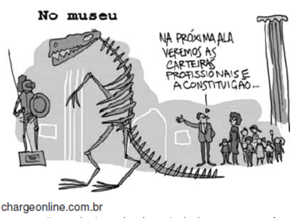
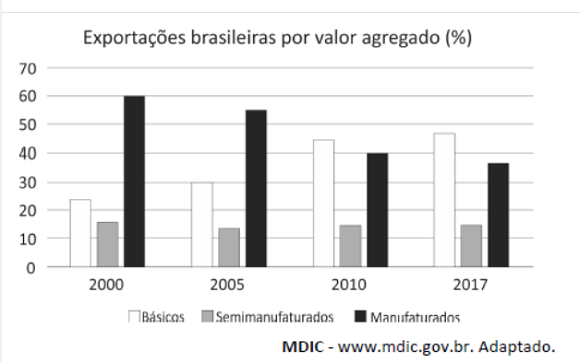
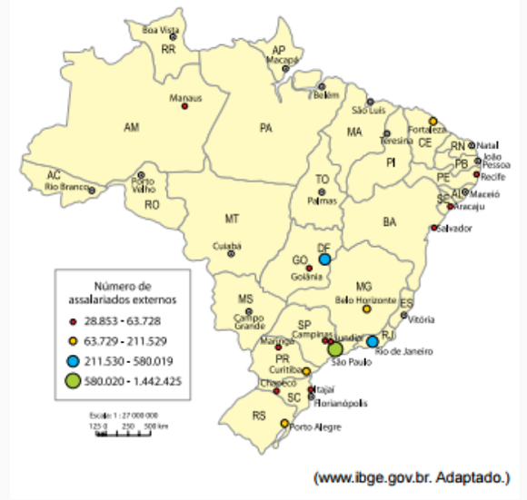

Conteúdo: Balança comercial: Exportações, Importações; Desemprego estrutural; Relações comerciais; Divisão territorial do trabalho.
Objetivo: Compreender a posição do Brasil no cenário mundial no período atual da globalização.
Questão 01
(FMJ 2021) Em julho de 2020, o Brasil exportou US$ 19,56 bilhões, enquanto o total de produtos e serviços importados fechou em US$ 11,50 bilhões. No acumulado do ano, as exportações brasileiras estão 6,4% menores do que no mesmo período (janeiro a julho) de 2019. No caso das importações, o recuo nos primeiros sete meses do ano é ainda maior, de 10,5%, na comparação com o mesmo período do ano passado.
(https://agenciabrasil.ebc.com.br. Adaptado.)
De acordo com conhecimentos sobre a balança comercial brasileira, as informações do excerto indicam a ocorrência de
a) déficit, consequência da alta nas importações de produtos eletrônicos do mercado norte-americano devido às sanções chinesas.
b) superávit, fruto da grande exportação de commodities devido à alta demanda dos países asiáticos.
c) superávit, resultado dos ganhos na exportação de semimanufaturados devido às reservas minerais brasileiras.
d) superávit, decorrente da exportação de bens e produtos industrializados devido à valorização do dólar em relação ao real.
e) déficit, reflexo das perdas na importação de produtos de alto valor agregado devido à desvalorização do real frente ao dólar.
Questão 02
(ENEM 2023)
“Produtores rurais europeus são antigos opositores de um grande acordo com o Mercosul. Na visão deles, existe um nítido risco de concorrência desleal, pois, na Europa, é preciso seguir regras mais rígidas de produção, o que encarece o processo. Assim, eles não conseguiriam competir com os preços, por exemplo, da carne brasileira e teriam seus negócios ameaçados. Por outro lado, o setor industrial europeu se mobiliza a favor do acordo, uma vez que as reduções de tarifas no comércio internacional dariam maior acesso ao mercado sul-americano. Um exemplo é o setor automotivo europeu, que prevê maior participação e concorrência nos países do Mercosul caso o acordo siga em frente”.
ROUBICEK, M. Como o risco ambiental afeta o acordo entre Mercosul e União Europeia. Disponível em: www.nexojornal.com.br. Acesso em: 25 out. 2021.
No contexto do acordo citado, os dois grupos econômicos europeus defendem, respectivamente, a
Ao analisar o contexto do acordo entre Mercosul e União Europeia descrito no texto, é importante observar os interesses econômicos dos dois grupos europeus mencionados: os produtores rurais e o setor industrial. Os produtores rurais europeus estão preocupados com a concorrência desleal e o risco para seus negócios devido às regras mais rígidas de produção na Europa, que encarecem o processo e os colocam em desvantagem frente aos produtos brasileiros, como a carne. Por outro lado, o setor industrial europeu, representado pelo setor automotivo, vê oportunidades de maior acesso ao mercado sul-americano e aumento da concorrência caso o acordo seja implementado. Considerando essas informações, é possível deduzir quem defende o que para garantir seus interesses. Escolha alternativa que diz o que os produtores rurais europeus defendem e o que seria mais vantajoso para os industriais da Europa.
Resposta: Letra D. Manutenção das barreiras fitossanitárias e a livre circulação de mercadorias.
a) restrição dos fluxos migratórios e a maior atuação de sindicatos.
b) ampliação das leis trabalhistas e a plena importação de manufaturados.
c) proteção das florestas nacionais e a ampla transferência de tecnologias.
d) manutenção das barreiras fitossanitárias e a livre circulação de mercadorias.
e) remoção dos entraves alfandegários e a melhor remuneração de empregados.
Comentário:
A alternativa a) está incorreta. Os produtores rurais europeus não estão preocupados com a restrição dos fluxos migratórios, mas sim com a concorrência desleal devido às diferenças nas regras de produção entre Europa e Mercosul.
A alternativa b) está incorreta. Os produtores rurais europeus não estão defendendo a ampliação das leis trabalhistas, mas sim estão preocupados com a concorrência desleal que poderia surgir devido às diferenças nas regras de produção.
A alternativa c) está incorreta. Os produtores rurais europeus não estão defendendo a proteção das florestas nacionais, mas sim estão preocupados com a concorrência desleal devido às diferenças nas regras de produção.
A alternativa d) está correta. O setor industrial europeu, incluindo o setor automotivo, está a favor do acordo com o Mercosul devido às reduções de tarifas no comércio internacional, o que possibilitaria maior acesso ao mercado sul-americano.
A alternativa e) está incorreta. Os produtores rurais europeus não estão defendendo a remoção dos entraves alfandegários, mas sim estão preocupados com a concorrência desleal devido às diferenças nas regras de produção.
Questão 03
(ENEM 2020)
“Embora inegáveis os benefícios que ambas as economias têm auferido do intercâmbio comercial, o Brasil tem reiterado seu objetivo de desenvolver com a China uma relação comercial menos assimétrica. Os números revelam com clareza a assimetria. As exportações brasileiras de produtos básicos, especialmente soja, minério de ferro e petróleo, compõem, dependendo do ano, algo entre 75% e 80% da pauta, ao passo que as importações brasileiras consistem, aproximadamente, em 95% de produtos industrializados chineses, que vão desde os mais variados bens de consumo até máquinas e equipamentos de alto valor”.
LEÃO, V C. Prefácio. In. CINTRA, M. A. M.; SILVA FILHO. E B: PINTO, E. C. (Org.). China em transformação: dimensões econômicas e geopolíticas do desenvolvimento. Rio de Janeiro: Ipes, 2015.
Uma ação estatal de longo prazo capaz de reduzir a assimetria na balança comercial brasileira, conforme exposto no texto, é o(a)
a) expansão do setor extrativista.
b) incremento da atividade agrícola.
c) diversificação da matriz energética.
d) fortalecimento da pesquisa científica.
e) monitoramento do fluxo alfandegário.
A balança comercial se refere à diferença entre a quantidade de produtos exportados e importados na relação entre os dois países. Para o Brasil reduzir a necessidade de compra e aumentar a venda, obtendo melhores resultados na balança comercial é preciso investimento interno no setor de educação para produzir e desenvolver novas tecnologias.
Questão 04
(UEL 2020) Leia a charge a seguir.

A charge remete a questões relacionadas à sociedade contemporânea.
Com base na charge e nos conhecimentos sobre trabalho e sociedade, assinale a alternativa correta.
a) A carteira “verde e amarela”, legalizada pelo atual governo federal, alinha-se aos esforços no âmbito do poder de Estado para ampliar a segurança jurídica dos trabalhadores, reduzindo a flexibilização e a terceirização.
b) A atual reforma trabalhista, pretendida desde o governo Lula, busca alinhar o capitalismo brasileiro à dinâmica do capitalismo globalizado.
c) Diante do desemprego mundial, a atual tendência do capitalismo tem sido fortalecer direitos sociais em detrimento da matriz neoliberal formulada por Keynes.
d) Instrumentos normativos, como as constituições federais, perderam sua importância econômica na medida em que os novos governantes mundiais são as empresas e não mais o poder dos Estados Nacionais.
e) As reformulações no campo dos direitos trabalhistas no Brasil têm sido realizadas para se adequarem a acordos assinados pelo atual governo federal com a Organização Internacional do Trabalho (OIT).
a) Incorreta. As iniciativas que têm sido tomadas pelos últimos governos federais no Brasil, Bolsonaro inclusive, caminham no sentido de fortalecer a flexibilização e não a ampliação dos direitos sociais dos trabalhadores, sendo um exemplo a reforma trabalhista e a ideia da carteira "verde e amarela".
b) Correta. Na medida em que o país estabelece relações mais estreitas com o mercado mundial e precisa competir com produtos de outros países, a reforma trabalhista tem procurado seguir o receituário neoliberal no campo do trabalho adotado por outros países.
c) Incorreta. As políticas neoliberais têm priorizado a liberdade de negociação entre os agentes por considerarem que isto é fundamental para a ativação da economia. Com isso, um dos pontos centrais das propostas neoliberais tem como resultado o apoio à desregulamentação das relações de trabalho enfraquecendo, assim, a proteção social dos trabalhadores.
d) Incorreta. Embora as grandes empresas desempenhem um papel fundamental na construção das relações econômicas mundiais, o Estado continua a ser o mediador para a legalização de acordos comerciais entre as nações.
e) Incorreta. A OIT trabalha com a perspectiva de reforçar relações de trabalho saudáveis, sendo um exemplo a discussão sobre "trabalho decente". Em sentido contrário, caminham as atuais políticas federais, que buscam enfraquecer orientações e direcionamentos propostos pela OIT.
Questão 05
(FGV-SP 2019)
“Graças aos progressos da ciência e da técnica e à circulação acelerada de informações, geram-se as condições materiais e imateriais para aumentar a especialização do trabalho dos lugares. Cada ponto do território brasileiro modernizado é chamado a oferecer aptidões específicas à produção. É uma nova divisão territorial, fundada na ocupação de áreas até então periféricas e na remodelação de regiões já ocupadas”.
(Milton Santos e Maria L. Silveira. O Brasil, 2006)
A nova divisão territorial descrita no excerto corresponde à
a) Guerra fiscal, que amplia a disputa entre estados e municípios.
b) especulação imobiliária, que beneficia as áreas com maior infraestrutura.
c) descentralização industrial, que segmenta o território.
d) economia de mercado, que equilibra capital direto e indireto.
e) regulamentação da economia, que favorece as áreas desconcentradas.
Questão 06
(ENEM 2019) Embora os centros de decisão permaneçam fortemente centralizados nas cidades mundiais, as atividades produtivas podem ser desconcentradas, desde que haja conexões fáceis entre as unidades produtivas e os centros de gestão e exista a disponibilidade de trabalho qualificado e uma base técnica adequada às operações industriais.
EGLER, C. A. G. Questão regional e a gestão do território no Brasil. In: CASTRO, I. E.; CORRÊA, R. L.; GOMES, P. C. C. (Org.). Geografia: conceitos e temas. Rio de Janeiro: Bertrand Brasil, 2014.
A mudança nas atividades produtivas a que o texto faz referência é motivada pelo seguinte fator:
a) Definição volátil das taxas aduaneiras e cambiais.
b) Prestação regulada de serviços bancários e financeiros.
c) Controle estrito do planejamento familiar e fluxo populacional.
d) Renovação constante das normas jurídicas e marcos contratuais.
e) Oferta suficiente de infraestruturas logísticas e serviços especializados.
Questão 07
(FUVEST 2019)

Com base no gráfico referente à pauta das exportações brasileiras, é correto afirmar que, no período analisado, houve
a) ampliação do setor secundário, especialmente de bens de capital intermediários.
b) consolidação do Brasil como exportador de alta tecnologia, cujo percentual vem se ampliando na pauta de exportações brasileiras.
c) fortalecimento do setor primário e declínio do setor de maior valor agregado
d) maior peso do setor primário, pela primeira vez na história econômica brasileira.
e) diminuição da agroindústria nas exportações e aumento do peso dos bens manufaturados.
Questão 08
(IFRR 2018) O Brasil é um país subdesenvolvido industrializado. Isso significa que o país possui um sistema político-econômico vinculado ao capitalismo. Esse processo promove a apresentação no país, da maioria das empresas da iniciativa privada, que têm como principal finalidade a busca incessante de lucros. Dessa forma, o conjunto de atividades econômicas influencia diretamente na configuração da economia nacional.
Diante deste contexto, a posição do Brasil no cenário econômico mundial:
a) apresenta economia dependente, pois possui um baixo índice de industrialização, com economia proveniente somente das indústrias de base, voltado para o mercado interno.
b) se encontra com baixo grau de dependência tecnológica e econômica e com fragilidade comercial em relação às grandes potências.
c) possui uma baixa dívida externa, com pequenas quantidades de empresas multinacionais e com restrita elaboração de novas tecnologias e baixas reprodução de técnicas produtivas.
d) não se apresenta no centro do capitalismo mundial, pois se enquadra como uma economia dependente e periférica; podendo ser classificado também como um país emergente.
e) apresenta economia dependente, que apesar de possuir um índice considerável de industrialização, ainda necessita de grande importação de inúmeros produtos do setor primário.
Questão 09
(CN 2018) Tomando como base o cenário Sul-americano e o papel do Brasil na Iniciativa para a Integração Regional da Infraestrutura Sul-Americana (IRSA), analise se as afirmativas abaixo são V(verdadeiras) ou F(falsas), e assinale a opção correta.
( ) Os objetivos da IIRSA, criada em 2000, procuraram modernizar as relações e potencializar a proximidade sul-americana, rompendo os distanciamentos territoriais por meio de um espaço ampliado através de obras e articulações nas áreas de transportes, energia e comunicações.
( ) A IIRSA procurou desenvolver a exploração dos recursos naturais no território sul-americano, formando um espaço ampliado onde se objetivou respeitar as articulações entre os interesses das sociedades locais e dos investidores internacionais.
( ) O processo de expansão da infraestrutura na região era de interesse do Brasil porque além de possibilitar um novo mercado para as construtoras brasileiras também abriria mercados dos países sul-americanos para seus produtos industriais, energéticos e do agronegócio.
( ) O projeto de integração também contaria com financiamento do Banco Nacional de Desenvolvimento Econômico e Social (BNDES) por meio de ações diplomáticas e políticas do governo brasileiro com intuito de fortalecer a presença do país como potência regional no cenário sul-americano.
a) (V)(V)(F)(F).
b) (V)(F)(V)(F).
c) (V)(F)(V)(V).
d) (F)(V)(F)(F).
e) (F)(F)(V)(F).
Questão 10
(UNESP 2015) Analise o mapa para responder a questão.
Papel dirigente dos municípios, segundo o número de assalariados externos aos seus limites territoriais, 2011.

“A economia de todos os países conhece um processo mais vasto e profundo de internacionalização, mas este tem como base um espaço que é nacional e cuja regulação continua sendo nacional, ainda que guiada em função dos interesses de empresas globais. Essa é a razão pela qual se pode falar legitimamente de espaço nacional da economia internacional. A centralidade política, de certo modo, se fortalece em Brasília, a centralidade econômica se afirma mais fortemente em São Paulo. Todavia, a chamada abertura da economia permite a São Paulo e Brasília exercerem apenas uma “regulação delegada”, isto é, uma regulação cujas “ordens” se situam fora de sua competência territorial e deixam pequena margem para a escolha de caminhos suscetíveis de atribuir, de dentro, um destino ao próprio território nacional”.
(Milton Santos e Maria Laura Silveira. O Brasil: território e sociedade no início do século XXI, 2001. Adaptado.)
A condição brasileira de “espaço nacional da economia internacional” e a “regulação delegada” exercida pelas principais metrópoles nacionais se confirmam uma vez que
a) os espaços produtivos integrados à economia global se caracterizam pela submissão a uma lógica internacional, ao passo que as metrópoles brasileiras se constituem nos espaços a partir dos quais as grandes empresas globais comandam suas atividades econômicas no Brasil.
b) os espaços produtivos integrados à economia nacional se caracterizam pela submissão aos interesses nacionais, ao passo que a capital brasileira se constitui no espaço a partir do qual a maioria das grandes empresas globais comandam suas atividades econômicas no Brasil.
c) os espaços produtivos nacionais integrados à economia global se caracterizam pelo seu poder de regulação dos fluxos financeiros globais, ao passo que as metrópoles brasileiras se constituem nos espaços a partir dos quais as grandes empresas globais comandam suas atividades econômicas internacionais.
d) os espaços produtivos integrados à economia global se caracterizam pela submissão aos interesses nacionais, ao passo que a capital brasileira se constitui no espaço onde se realiza o comando pleno da produção e do consumo no Brasil.
e) os espaços produtivos integrados à economia global se caracterizam pela submissão a uma lógica internacional, ao passo que as metrópoles brasileiras se constituem nos espaços a partir dos quais as pequenas e médias empresas comandam a moderna produção brasileira.
A economia brasileira, assim como a da maioria dos outros países, conhece um processo profundo de internacionalização, no qual os espaços produtivos integrados à economia global são subordinados à lógica internacional. Nesse contexto, as metrópoles brasileiras são o ponto de comando das empresas globais no território nacional.